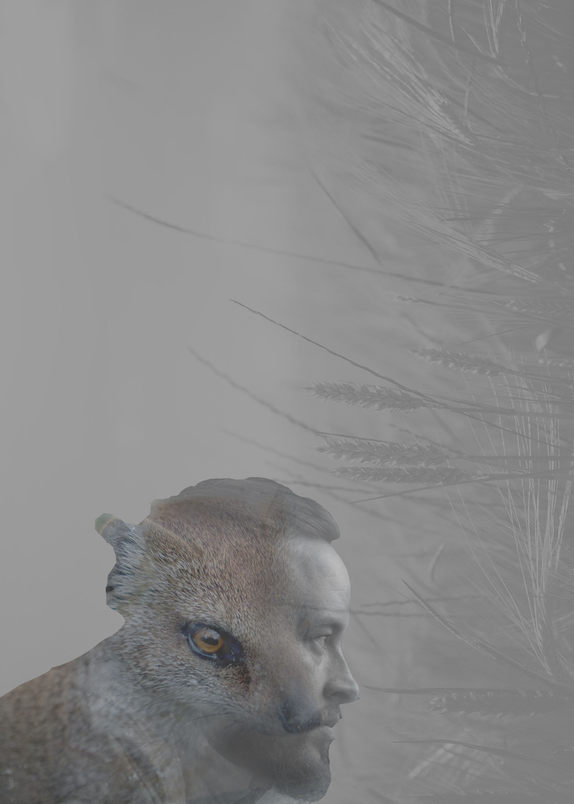

In this section, I be presenting some of my work as CEO of Studio Depths, some aren't in this list however; these are some of the art works i've done over the times of my learning in photoshop/illustrator and ect.
I made this art piece back in high school, i made this under my graphic design class, i spent about maybe a year or 2 years in that class and i'd say it was worth it. some of the works i've shown here are works form my time in high school and i do have some that i did in my first semester in college.
I made this art piece back in high school, i made this under my graphic design class, i spent about maybe a year or 2 years in that class and i'd say it was worth it. some of the works i've shown here are works form my time in high school and i do have some that i did in my first semester in college.

this piece was made in my first time in college, it was a double exposure where i found a picture of a person and an animal and get a backround of fields and turned it all in back and white then i went there the double exposure process.
this piece was made in my first time in college, it was a double exposure where i found a picture of a person and an animal and get a backround of fields and turned it all in back and white then i went there the double exposure process.
Lastly, this art piece out of every art pieces, was the one that i felt attacted to, it was the personatity of who i was as a person at the time i was making the project in high school...A Drop Of Shyness/Shy'O droppling. this is not the last art project i've done but the was the one that expressed me at the time.
this piece was made in my first time in college, it was a double exposure where i found a picture of a person and an animal and get a backround of fields and turned it all in back and white then i went there the double exposure process.
this piece was made in my first time in college, it was a double exposure where i found a picture of a person and an animal and get a backround of fields and turned it all in back and white then i went there the double exposure process.
The Long journey
I came a long way with my skills in photoshop/illustrator and done a lot of other stuff to get to where i am now, filming, editing and ect.
i made films for example, the fake it film, the war film, and the summer child film were all films i made over time throughout my time learning these skills. from high school to college, i worked hard to make what i need to do; well happen. all to make it to my goal to be a Game Developer/designer and make Studio Depths a future up and coming Video Game company with a Dev Team to be proud of.
“One can choose to go back toward safety or forward toward growth. Growth must be chosen again and again; fear must be overcome again and again.” — Abraham Maslow